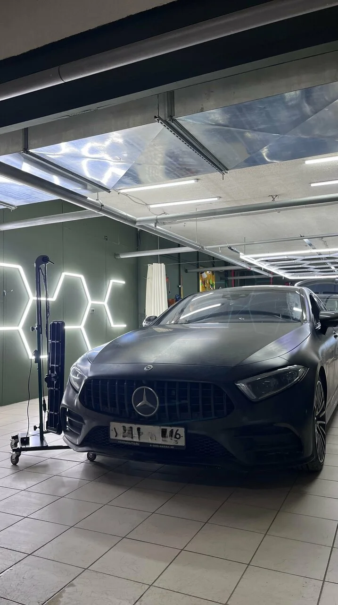

Иллюстрация — пример повреждения; возможность ремонта зависит от состояния покрытия.
Вмятины на кузове? Обсудим ремонт без покраски
«Не Бита» — студия ремонта вмятин без покраски в Казани. Здесь также занимаются вмятинами после града. Позвоните, опишите повреждение и уточните возможность восстановления вашей детали. Подходящий способ ремонта, объём работ и время визита нужно согласовать с мастерской после оценки состояния кузова.
Обратитесь с локальной вмятиной на кузове и уточните, возможно ли восстановление без окрашивания в вашем случае. Сообщите, на какой детали находится повреждение, есть ли сколы, трещины покрытия или следы предыдущего ремонта. Окончательное решение зависит от осмотра.
02
Вмятины после града
Если после града на кузове появились многочисленные вмятины, перечислите пострадавшие детали и подготовьте общий вид автомобиля. Отдельно покажите самые заметные участки. Количество повреждений, их расположение и состояние покрытия помогут обсудить объём работ, но не заменят осмотр.

Иллюстрация — общий приём, не работа студии. Размер и формат изменены. · PrimeAutoNorthernMI · CC BY-SA 4.0 · Источник
НЕ БИТА · КАЗАНЬ
Сначала оценить повреждение
У вмятин разная глубина, форма и расположение. Даже похожие следы на двери и на ребре детали могут требовать разного подхода. До согласования ремонта важно обсудить состояние краски, прежние вмешательства и доступ к повреждённому участку. Иллюстрация рядом показывает один из общих приёмов работы с вмятинами, а не оборудование или работу этой студии. Выбор метода уточняйте у мастера.
Что рассказать о повреждении
Для первого разговора полезнее конкретные детали, чем описание «небольшая вмятина». Подготовьте ответы на несколько вопросов: так будет проще понять, что именно предстоит оценить.
Где находится вмятина: дверь, крыло, капот или другая деталь? Укажите, затронуты ли край или ребро поверхности.
Как появилось повреждение: удар, град или другая известная причина? Если обстоятельства неизвестны, так и скажите.
Сохранилась ли краска: заметны ли царапины, сколы или трещины? Не пытайтесь самостоятельно скрыть эти следы.
Ремонтировали или красили деталь раньше? Известная история покрытия важна при обсуждении допустимого способа восстановления.
От чего зависит оценка ремонта
Размер вмятины — только часть оценки. Обычно обсуждают глубину и форму повреждения, количество участков, расположение относительно краёв и рёбер детали, состояние покрытия и возможность доступа к металлу. Несколько небольших следов после града и одна выраженная складка требуют отдельного рассмотрения.
Уточните, какие работы входят в расчёт и понадобится ли дополнительный осмотр. Стоимость и сроки согласуйте до начала ремонта. Фотографии помогают описать задачу, но по ним могут быть не видны растяжение металла, старый ремонт или мелкие дефекты краски.
Как подготовиться к обращению
Запишите марку и модель автомобиля. Сделайте общий снимок повреждённой детали и несколько крупных планов под разными углами при ровном освещении. Постарайтесь показать отражение на поверхности: так форма вмятины будет понятнее. Не применяйте фильтры и не закрашивайте дефекты на снимке.
Позвоните по указанному номеру и уточните, как удобнее передать материалы, нужен ли предварительный осмотр и когда можно приехать. Если повреждений много, подготовьте их краткий список по деталям. До разговора с мастером не пробуйте выдавливать вмятину или нагревать покрытие самостоятельно.
Как обратиться в мастерскую
01
Позвоните
Назовите автомобиль, повреждённую деталь и причину обращения. Уточните, какая информация нужна для первой оценки.
02
Согласуйте осмотр
Обсудите возможность ремонта без окрашивания, условия оценки и удобное время визита. Уточните порядок согласования стоимости.
03
Приезжайте по адресу
Казань, улица Космонавтов, 73. Перед поездкой подтвердите время и уточните ориентир въезда в мастерскую.